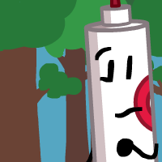

Red Marker
Gender: male
Pronouns: he/they
Age: 21
Purple: are you fucking stupid
Red Marker is generally conservative when it comes to taking risks. He would prefer cruising by life by blending in the background, doing what everyone else does. He seems to have neutral relationships with most contestants, except for Map of the World, who he shares a friendship with, even if he doesn't like to admit it. He doesn't have a very strong understanding of how friendship is supposed to work, and he's content that way, but he wouldn't mind having more people to talk to.
Voiced by: Asmo